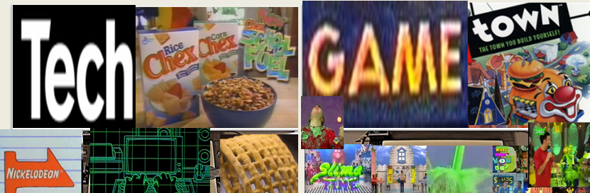

TECH CHEX & GAME-TOWN

This page is the digital home of the Chef's many GAME-TOWN Games and TECH CHEX Applications used in class as Academic Objective Accomplishers!
GAME-TOWN Games
Growing up I was a HUGE fan of Game-Shows, especially the many awesome ones on NICKELODEON that were family friendly, fun, and involved getting SLIMED! Needless to say, I've made A LOT of games designed for my Science Classes, and HERE THEY ARE!!!!!!
Floyd Camp (SYS & BugJuice)
Floyd House
Where In The World is Chef Floyardee?
Big Brother: Floyd House Edition
Dragon Ball Floyd
Family Floyd
Blue Mark Special aka "The Randomizer Game"
Hollywood Floyd Squares
Password Floyardee
$10,000 Pyramid: Floyd Edition
BattleChef
Connect 4loyd
Tool Time Matching + Chef Floyardee Home Improvement Platformer
PSSA Jeopardy: Hosted By Chef Floyardee
Press Your CHEF
The Weakest CHEF
Nick-e-floy-deon G.A.S. (Double Dare, Figure It Out, ChefOtakuOtev Says, Hidden Temple, Guts, Wild&Crazy, What Would You Do, & You'reOn!
Pokémon Floyd Version
This is the Beta Version of Pokémon Floyd, and as such more badges and content are to be added!
Controls are as follows:
A - "z"
B - "x"
Up - "Arrow Up"
Down - "Arrow Down"
Left - "Arrow Left"
Right - "Arrow Right"
Start - "Enter"
Select - "Space"
To play this game, please, download the latest Flash player!

TECH CHEX Applications
Chef Floyardee's Rocks Twitter Page Feed